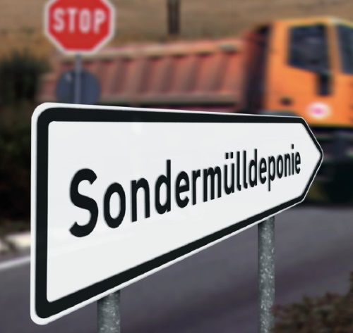
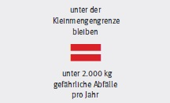

Für viele Gefahrstoffe spezielle Regelungen
Die Umsetzung der Bestimmungen des
Abfallrechts in die betriebliche Praxis
macht vielen Unternehmen Schwierigkeiten.
Unproblematisch ist der normale
Baustellenabfall wie Beton, Dachziegel
oder Mauersteinreste. Viele Gefahrstoffe
gelten jedoch als Sonderabfälle (besonders
überwachungsbedürftige Abfälle)
und sind speziell zu entsorgen.
Da die Abfallentsorgung in jedem
Bundesland anders geregelt ist, sollten
Sie sich in jedem Fall informieren,
welche besonderen Regelungen Sie
beachten müssen. Auskunft erhalten
Sie beim Gewerbeabfallberater der
Kommune oder des Landkreises (zum
Beispiel beim Amt für Abfallwirtschaft).
Baureste, die als gefährliche Abfälle (Sonderabfall) zu entsorgen sind
|
Zum Beispiel:
- Mineralölhaltige Schalöle
- Öle (Altöle, Maschinen- und
Getriebeöle, Hydrauliköle)
- Kraftstoffe (Benzin, Diesel)
- Batterien, Akkumulatoren
- Holzschutzmittel
- lösemittelhaltige Farb- und Anstrichstoffe
- Leuchtstoffröhren, Quecksilberdampflampen
- teerhaltige Baustoffe
- Bauschutt und Erdaushub mit schädlichen
Verunreinigungen
|
Vermeiden Sie Aufwand, beachten Sie die Kleinmengengrenze
Aufwendige Anzeige- und Nachweispflicht
können Sie vermeiden,
wenn Sie im Rahmen wirtschaftlicher Tätigkeiten

In diesem Fall benötigen Sie nur eine
Übernahmebescheinigung
- des Entsorgers, der die Abfälle
abholt, oder
- der kommunalen Sammelstelle.
Sparen Sie
Deponie-Gebühren –
sammeln Sie
getrennt
Sie sollten Sonderabfälle und Bauschutt
in verschiedenen Behältern auf
der Baustelle getrennt sammeln.
Die Vorteile:
- Sie reduzieren die Menge der
kritischen Abfälle.
- Sie erfüllen nur so die
Voraussetzungen, um die Übernahmebescheinigung
zu erhalten.
- Sie sparen Kosten: Wenn Sie unkritische
Baustellenabfälle mit
Sonderabfällen mischen, zahlen
Sie die hohen Deponie-Gebühren
für Sonderabfälle auch für Ihren
Bauschutt.
Regeln für Abfälle auf dem Bau
- Vermeiden Sie nach Möglichkeit den Einsatz von Produkten, die
Gefahrstoffe enthalten.
- Setzen Sie möglichst schadstoffarme Produkte ein.
- Orientieren Sie sich bei den Gebindegrößen an dem zu erwartenden
Verbrauch.
- Suchen Sie nach umweltfreundlichen Lösungen für Ihre Leergebinde.
- Sprechen Sie mit Ihrem Lieferanten.
- Bevorzugen Sie beim Einkauf Mehrweggebinde.
- Lassen Sie Baustoffe nicht zu Abfällen werden.
- Nutzen Sie alle betrieblichen Recyclingmaßnahmen aus.
- Informieren Sie sich bei größeren Abfallmengen über
Verwerterbetriebe.
- Bieten Sie verwertbare Abfälle über die Abfallbörsen der Industrie- und Handelskammern an.
- Sammeln Sie nach Abfallarten getrennt.
- Nutzen Sie die günstigen Wiederverwertungs- und Aufbereitungsmöglichkeiten.
- Erarbeiten Sie klare Regelungen für Organisation und Ablauf der
innerbetrieblichen Abfallentsorgung.
- Informieren Sie Ihre Mitarbeiter mit Hilfe von Betriebsanweisungen.
Hintergrundinformation zum Thema Gefahrstoffe
|
Weitere Informationen zum Thema Gefahrstoffe
in der Bauwirtschaft finden Sie
unter www.BGBAU.de. Die Gefahrstoff-Software WINGIS liefert Ihnen vielfältige
Unterstützung. Die Soft ware ist im Internet oder als SmartPhone-App nutzbar.
|